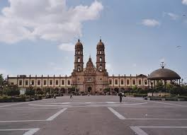

HOLA, BIENVENIDOS A GUADALAJARA
Construcciones históricas y ampliamente significativas son el distintivo de Guadalajara. Sus obras de arte, costumbres,
tradiciones y leyendas representan para sus habitantes y turistas un foco de atracción de gran interés. En lo que a Guadalajara corresponde,
se tiene infraestructura para el turismo nacional, internacional, y local.
Dentro de este hermoso lugar, te presentamos un top 10 de los lugares más visitados de Guadalajara:
- Catedral de Guadalajara: La catedral de Guadalajara, o catedral basílica de la Asunción de María Santísima es una catedral de México, parroquia sede de la arquidiócesis de Guadalajara y uno de los edificios más representativos de la ciudad, por sus torres con agujas neogóticas y por su hermosa historia.

- Zoológico Guadalajara: El Zoológico Guadalajara es el principal zoológico metropolitano de la ciudad de Guadalajara (México), está ubicado en Paseo del zoológico 600 a la altura de Calzada Independencia Norte al oriente de la Zona Metropolitana de Guadalajara en el municipio de Guadalajara, es considerado uno de los más importantes y más grandes en el país por su número de especies.
- Templo Expiatorio del Santísimo Sacramento: La Basílica del Santísimo Sacramento ó conocido como Templo Expiatorio de Guadalajara es un templo católico dedicado al Santísimo Sacramento, ubicado en Guadalajara, Jalisco, en México. Es de estilo neogótico y considerado la máxima obra en su estilo en México.

- Mercado San Juan de Dios: El Mercado Libertad, más conocido como Mercado de San Juan de Dios ó "San Johnny", está localizado en la zona centro de la ciudad de Guadalajara, Jalisco, México. Es el mercado techado más grande de América Latina.
- Palacio Municipal de Guadalajara: El Palacio Municipal de Guadalajara es un edificio de estilo neocolonial construido entre 1949 y 1952 que es sede del Ayuntamiento municipal de la capital del estado de Jalisco, México. Se encuentra localizado en el centro histórico de Jalisco. La fachada del inmueble originalmente tenía un estilo neoclásico.
- Basílica de Nuestra Señora de Zapopan: La Basílica de Zapopan y el Convento de Nuestra Señora de la Expectación de Zapopan es un santuario franciscano ubicado en el corazón de Zapopan en el estado de Jalisco, México, es el segundo recinto mariano más visitado del estado, seguido solo por la Catedral Basílica de Nuestra Señora de San Juan de los Lagos. Pertenece a la provincia franciscana de los santos Francisco y Santiago, que comprende: Jalisco, San Luis Potosí, Aguascalientes, Colima, Zacatecas, Tamaulipas, Coahuila, Nuevo León, Durango, Nayarit, Colima y Texas.
 
- Bosque Los Colomos: El Bosque Los Colomos es un Parque urbano al noreste de la ciudad de Guadalajara, capital del estado mexicano de Jalisco. El parque se encuentra en los límites de Guadalajara y Zapopan, formando uno de los pulmones de la Zona Metropolitana de Guadalajara. En este parque hay varias atracciones desde lagos con patos, un jardín japonés, recorridos, pistas de correr, zona de pícnic y un centro cultural.
- Museo Regional de Guadalajara: Su uso original fue el de colegio-seminario del Señor San José.
- Jose Cuervo Express: El tren te lleva al Pueblo Mágico de Tequila, donde un día repleto de actividades está esperando.

- Tequila (Jalisco): Tequila es un municipio y un poblado del estado de Jalisco, en México. El nombre de Tequila proviene de la palabra náhuatl Tekilan, (Lugar de los trabajadores). Con estatus de pueblo mágico, Tequila es conocido por darle su nombre al tequila, al ser uno de los territorios donde éste se produce.
¡VEN Y CONOCE LAS MARAVILLAS QUE TIENE GUADALAJARA PARA TI!
¡TE ESPERAMOS!